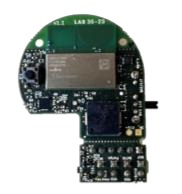
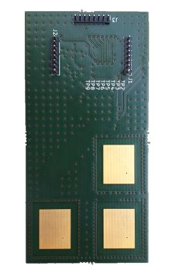
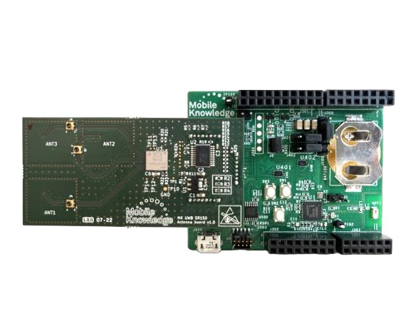

스마트헤드폰 · UWB 하드웨어
MK UWB Kit SR150/SR040
착용 태그가 보내고 고정 앵커가 방향을 읽는 구성
기본 키트에는 Type 2DK를 실장한 태그 2대와 SR150 3D 앵커 1대가 들어 있다. 태그와 앵커는 서로 다른 UWB 칩과 안테나를 사용한다.






구성 부품과 역할
헤드폰 실장 후보
Type 2DK · SR040
19.6 × 18.2 × 최대 2.3 mm 모듈에 UWB, QN9090 BLE MCU와 안테나를 통합한다. 제공되는 태그 케이스와 디버그 커넥터는 별도 공간을 차지한다.
고정 수신부
Type 2BP · SR150
3D 안테나 보드에 SR150 계열 모듈과 PCB 안테나 3개가 있다. 앵커에서 신호가 들어온 방위각·고도각을 추정한다.
앵커 제어부
MK UWB Shield 2
QN9090이 세션을 제어한다. USB·UART·BLE를 이용할 수 있고, 동봉된 어댑터는 Raspberry Pi 연결에 쓴다. USB 메모리에 소프트웨어와 문서가 제공된다.
측정값이 만들어지는 과정
- 태그 또는 호환 스마트폰이 세션에 참여
- SR150 앵커에서 거리·도래각 측정
- 앵커 기준으로 상대 위치 해석
헤드폰에는 태그 쪽 Type 2DK를 검토한다. 기존 자리보다 폭이 5.2 mm 넓어 새 캐리어와 이어컵 조립 확인이 필요하다. 앵커가 보는 태그 방향과 착용자의 정면은 독립적이므로 머리 회전은 U4 BMI270으로 측정한다.
프로젝트에서 확인할 항목
MK UWB Connect의 Android·iOS 예제로 태그–폰과 앵커–폰을 각각 시험한다. 기본 구성의 앵커는 1대다. 여러 앵커를 설치하는 RTLS 키트는 별도 제품이며, 여러 HP·SP 쌍의 연속 좌표와 올바른 기기 반환은 현장 시험 항목이다.